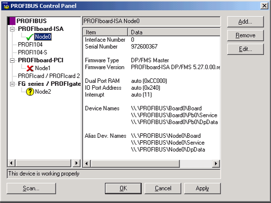
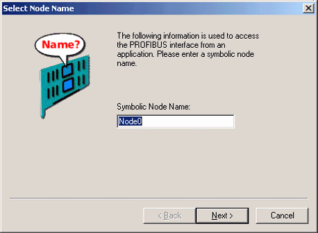
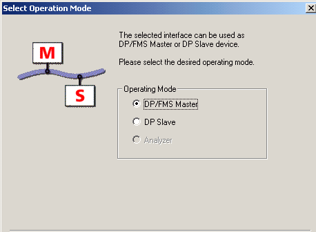
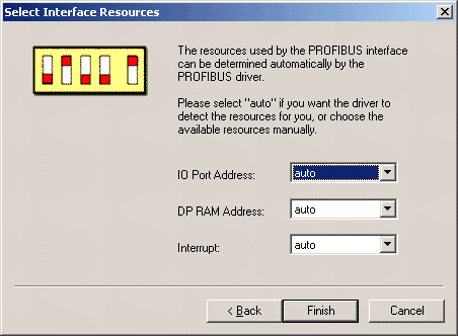
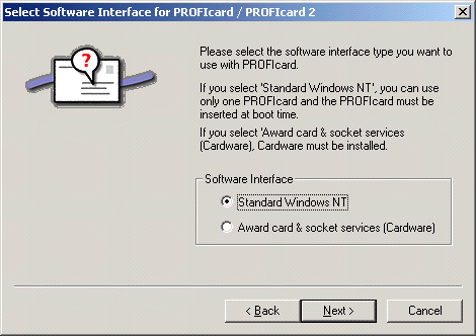
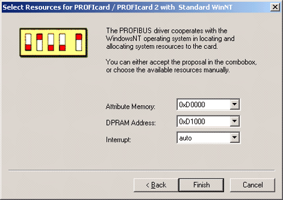
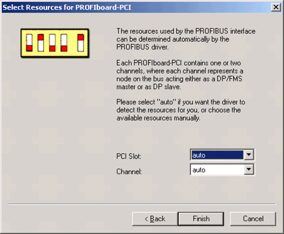
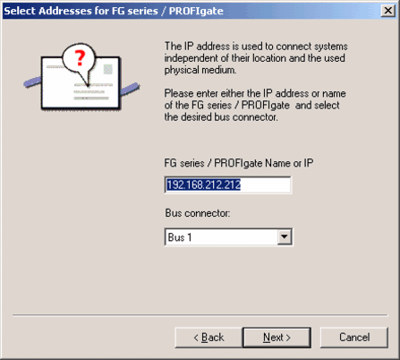
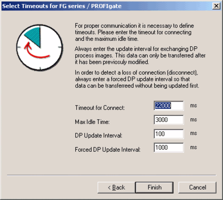

| Zur Konfigurierung der Parameter des PROFIBUS-Hardwaregerätetreibers für Windows 2000/XP verwenden Sie das PROFIBUS-Applet zur Systemsteuerung. Das PROFIBUS-Systemsteuer-ungsapplet wird während des Installationsvorgangs in der "Systemsteuerung" installiert. Das PROFIBUS-Systemsteuerungsapplet starten Sie durch Doppelklick auf das "PROFIBUS"-Symbol.
Übersicht
Die Benutzeroberfläche der PROFIBUS-Systemsteuerung verhält sich wie eine Standard-Windows-MDI-Anwendung (Multiple Document Interface). Sie besteht aus der PROFIBUS-Baumstruktur, Schaltflächen und einem Info-Bereich, in dem hardwarespezifische Konfigurationsparameter angezeigt werden.

PROFIBUS-Baumstruktur
Die PROFIBUS-Baumstruktur stellt alle konfigurierten PROFIBUS-Knoten mit ihrem aktuellen Status, aufgeteilt auf folgende Hardware-(Karten-)Kategorien dar:
- PROFIboard-ISA (ISA-Version von PROFIboard mit PROFIBUS DP/FMS-Master oder DP-Slave-Stack)
- PROFI104 (PC104-Board mit PROFIBUS DP/FMS-Master oder DP-Slave-Stack)
- PROFI104-S (PC104-Board mit PROFIBUS DP-Slave-Stack)
- PROFIboard-PCI (PCI-Version von PROFIboard mit PROFIBUS DP/FMS-Master oder DP-Slave-Stack)
- PROFIcard / PROFIcard 2 (PC-Karte mit PROFIBUS DP/FMS-Master-Stack)
- FG Series / PROFIgate (PROFIBUS-Ethernet-Gateway mit DP/FMS-Master oder DP-Slave-Stack)
Diese Kategorien bilden die erste Ebene des PROFIBUS-Baums und geben die möglichen Hardwareschnittstellentypen an. Sie werden immer angezeigt, unabhängig davon, ob solche Hardwareschnittstellen tatsächlich installiert sind oder nicht.
Bei einem PROFIBUS-Knoten handelt es sich um ein PROFIBUS-Gerät, das als Master oder Slave betrieben wird. PROFIboard-ISA, PROFIcard/PROFIcard 2, PROFI104 und PROFIgate können sich wie Einzelknoten verhalten, PROFIboard-PCI verfügt über zwei Kanäle und kann daher wie zwei Knoten agieren.
Nach der Konfiguration eines PROFIBUS-Knotens einer bestimmten Hardwarekategorie wird diese in Fettdruck angezeigt und ein Knoten-Symbol erscheint unter dieser Kategorie. Bei einem konfigurierten Knoten handelt es sich um einen Knoten, der dem PROFIBUS-Windows 2000/XP-Treiber bekannt ist. Je nach Status des Knotens werden drei verschiedene Symbole zur Darstellung eines Knotens unterschieden:
- Das Symbol
 zeigt an, daß der PROFIBUS-Knoten einwandfrei arbeitet. zeigt an, daß der PROFIBUS-Knoten einwandfrei arbeitet.
- Das Symbol zeigt an, daß der PROFIBUS-Knoten nicht ordnungsgemäß arbeitet.
- Das Symbol zeigt an, daß der PROFIBUS-Knoten konfiguriert, aber noch nicht geprüft wurde.
Info-Bereich
Die Haupteinstellungen (Firmware, Firmware-Version, Ressourcen, Gerätenamen, ...) der Konfiguration der PROFIBUS-Knoten werden im Info-Bereich angezeigt.
Statuszeile
Die Statuszeile zeigt den aktuellen Status eines PROFIBUS-Knotens an.
Schaltflächen
Die Schaltflächen in der PROFIBUS-Systemsteuerung haben folgende Bedeutung:
| Add |
Klicken Sie auf die Schaltfläche Add, um einen neuen PROFIBUS-Knoten zum PROFIBUS-Baum hinzuzufügen. |
| Edit |
Klicken Sie auf die Schaltfläche Edit, um die Einstellungen eines bestehenden PROFIBUS-Knotens im PROFIBUS-Baum zu bearbeiten. |
| Remove |
Klicken Sie auf die Schaltfläche Remove, um einen PROFIBUS-Knoten aus dem PROFIBUS-Baum zu entfernen. |
| Scan Nodes |
Klicken Sie auf die Schaltfläche Scan Nodes, um alle angeschlossenen PROFIBUS-Schnittstellen (-Karten) im PC automatisch zu suchen und zu konfigurieren. |
| OK |
Klicken Sie auf die Schaltfläche OK, um die aktuellen Konfigurationseinstellungen zu speichern und die Gerätetreiber zu laden. |
| Cancel |
Klicken Sie auf die Schaltfläche Cancel, um die letzten Konfigurationseinstellungen wiederherzustellen und die Gerätetreiber zu laden. |
| Apply |
Klicken Sie auf die Schaltfläche Apply, um die letzten Konfigurationseinstellungen zu übernehmen und die Gerätetreiber zu laden. |
Im folgenden wird ausführlich auf die Vorgehensweise beim Hinzufügen bzw. Bearbeiten eines Knotens sowie zum automatischen Scannen nach Knoten eingegangen.
Scannen nach Knoten
Nach dem Klicken auf die Schaltfläche Scan Nodes... sucht der PROFIBUS-Hardwaregerätetreiber nach allen auf Ihrem PC installierten PROFIBUS-Schnittstellen (-Karten). Alle erforderlichen Ressourcen wie bspw. Dual-Port-RAM, IO-Ports, Interrupts, usw. werden automatisch durch den Hardwaregerätetreiber festgestellt.
Je nach Hardwarekonfiguration kann der Scanvorgang einige Zeit in Anspruch nehmen, was durch eine Sanduhr dargestellt wird.
Eine PROFIBUS-Schnittstelle hinzufügen und bearbeiten
Klicken Sie auf die Schaltfläche Add, um den Hardwaregerätetreiber für eine neue PROFIBUS-Schnittstelle zu konfigurieren.
Zunächst erscheint ein Dialog, in dem Sie den Typ der zu konfigurierenden Schnittstellenkarte auswählen können.
Als nächstes können Sie einen symbolischen Namen für den neuen Knoten eingeben.
Die darauf folgenden Dialoge sind vom Typ der Schnittstellenkarte abhängig. Auf sie wird im einzelnen in den nachstehenden Abschnitten (3.3.1 bis 3.3.6) eingegangen.
Mit der Schaltfläche Edit kann die Konfiguration eines bestehenden Hardwaregerätetreibers einer PROFIBUS-Schnittstellenkarte geändert werden. Sie können den Knotennamen sowie weitere Parameter ändern, die von dem jeweiligen Schnittstellenkartentyp abhängig sind.
Die Dialoge zur Änderung eines Knotens entsprechen denen zum Hinzufügen eines neuen Knotens. Auf sie wird im einzelnen in den nachstehenden Abschnitten (3.3.1 bis 3.3.6) eingegangen.
Auswählen eines Knotennamens
Um von einer Anwendung aus auf ein logisches PROFIBUS-Gerät zugreifen zu können, ist ein eindeutiger Win32-Gerätename erforderlich. Außer dem Standard-Win32-Gerätenamen, der automatisch vom PROFIBUS-Hardwaregerätetreiber zugewiesen wird, kann optional ein Win32-Aliasname für das Gerät eingegeben werden.

Geben Sie einen symbolischen Knotennamen in das Textfeld ein und klicken Sie auf die Schaltfläche Next, um mit der Konfiguration fortzufahren. Klicken Sie auf die Schaltfläche Cancel, um die Konfiguration abzubrechen und zum Hauptdialog zurückzukehren.
Auswählen der Betriebsart
Eine PROFIBUS-Schnittstelle kann entweder als DP / FMS-Master oder als DP-Slave betrieben werden. 
Wählen Sie die gewünschte Betriebsart aus und klicken Sie auf die Schaltfläche Next, um mit der Konfiguration fortzufahren. Klicken Sie auf die Schaltfläche Back, um zum vorherigen Dialog zurückzukehren. Klicken Sie auf die Schaltfläche Cancel, um die Konfiguration abzubrechen und zum Hauptdialog zurückzukehren.
| HINWEIS: |
PROFIcard / PROFIcard 2 unterstützt nur die Betriebsart DP / FMS-Master.
PROFI104-S unterstützt nur die Betriebsart DP-Slave. |
| ACHTUNG: |
Bei einem Wechsel der Betriebsart führt der Hardwaregerätetreiber ein Download der gewählten Firmware auf die PROFIBUS-Karte durch. Die auf der Karte bestehende Firmware wird überschrieben!!! |
Parametereinstellungen für PROFIboard-ISA, PROFI104 und PROFI104-S
Beim Zugriff auf PROFIboard-ISA, PROFI104 oder PROFI104-S muß der PROFIBUS-Hardwaregerätetreiber Ressourcen wie bspw. IO-Ports, den Adressierungsbereich für das Dual-Port-RAM und Interruptadressen zuweisen.

| IO-Port Address: |
Die I/O-Basisadresse der Karte. Die Autoerkennung sucht nur im Bereich von 0x200 bis 0x3FC. Um eine Adresse außerhalb dieses Bereichs anzugeben, geben Sie die Basisadresse in das Eingabefeld ein. Weitere Informationen zu den gültigen I/O-Basisadressen erhalten Sie in Ihrem Hardwareinstallations-Handbuch. |
| DP RAM Address: |
Adresse des Dual-Port-Speichers (siehe Kapitel 2.2.1 Hardwarevoraussetzungen). |
| Interrupt: |
IRQ-Adresse (siehe Kapitel 2.2.1 Hardwarevoraussetzungen). |
Bei der automatischen Auswahl bestimmt der PROFIBUS-Hardwaretreiber die erforderlichen Ressourcen der PROFIBUS-Karte.
Wählen Sie die jeweiligen Ressourcen aus und klicken Sie auf die Schaltfläche Finish, um die Konfiguration abzuschließen und zum Hauptdialog zurückzukehren. Klicken Sie auf die Schaltfläche Back, um zum vorherigen Dialog zurückzukehren. Klicken Sie auf die Schaltfläche Cancel, um die Konfiguration abzubrechen und zum Hauptdialog zurückzukehren.
Parametereinstellungen für PROFIcard / PROFIcard 2
PROFIcard/PROFIcard 2-Softwareschnittstelle
Der PROFIBUS-Hardwaregerätetreiber stellt zwei Mechanismen zum Zugriff auf die PROFIcard/PROFIcard 2 zur Verfügung:
- Den Windows 2000/XP Standard-Freigabemechanismus für PC-Karten
- Die PC-Kartensoftware "CardWare for Windows NT" von Award Software International Inc.
Bei Verwendung des Windows 2000/XP Standard-Freigabemechanismus für PC-Karten kann nur genau eine PROFIcard verwendet werden. Die PROFIcard muß zum Zeitpunkt des Bootvorgangs montiert werden.

Wählen Sie die gewünschte Softwareschnittstelle für die PC-Karte aus und klicken Sie auf die Schaltfläche Next, um mit der Konfiguration fortzufahren. Klicken Sie auf die Schaltfläche Back, um zum vorherigen Dialog zurückzukehren. Klicken Sie auf die Schaltfläche Cancel, um die Konfiguration abzubrechen und zum Hauptdialog zurückzukehren.
PROFIcard / PROFIcard 2 (NT-Standard)
Beim Zugriff auf die PROFIcard über die Windows NT PC-Kartenfreigabe muß der PROFIBUS-Hardwaregerätetreiber der PROFIcard Ressourcen zuweisen.
| Attribute Memory |
Attributspeicher für die PC-Karte (siehe Kapitel 2.2.1 Hardwarevoraussetzungen). |
| DP RAM Address |
Adresse des Dual-Port-Speichers (siehe Kapitel 2.2.1 Hardwarevoraussetzungen). |
| Interrupt |
IRQ-Adresse (siehe Kapitel 2.2.1 Hardwarevoraussetzungen). |
Der PROFIBUS-Hardwaregerätetreiber verfügt nicht über die Möglichkeit einer automatischen Erkennung der Ressourcen, außer der Interrupt-Ressource. Sie müssen die physikalischen Werte selbst angeben. Sie können nur genau eine "PROFIcard (NT-Standard)" konfigurieren, da der Standard-NT-Freigabemechanismus für PC-Karten nur eine PROFIcard unterstützt. Die Konfiguration einer Kombination beider PROFIcard-Lösungen (PROFIcard (NT-Standard) und PROFIcard (Cardware) in einer einzelnen Installation ist nicht möglich.
Wählen Sie die jeweiligen Ressourcen aus und klicken Sie auf die Schaltfläche Finish, um die Konfiguration abzuschließen und zum Hauptdialog zurückzukehren. Klicken Sie auf die Schaltfläche Back, um zum vorherigen Dialog zurückzukehren. Klicken Sie auf die Schaltfläche Cancel, um die Konfiguration abzubrechen und zum Hauptdialog zurückzukehren.
| ACHTUNG: |
Der Windows 2000/XP-Gerätetreiber für die PC-Karte startet während des Bootvorgangs. Achten Sie darauf, nur freie Ressourcen zu konfigurieren, da Ihr System sonst bei montierter Karte evtl. nicht mehr bootet (wenn Sie bspw. die PROFIcard (NT-Standard) mit dem Interrupt des SCSI-Controllers konfiguriert haben, bleibt Ihr System während des Hochfahrens hängen). |
PROFIcard / PROFIcard 2 (Cardware)
Beim Zugriff auf die PROFIcard über die "Award Cardware for Windows NT" muß der PROFIBUS-Hardwaregerätetreiber der PROFIcard/PROFIcard 2 Ressourcen zuweisen.

| PCMCIA Socket: |
Socketnummer der PROFIcard. Dieser Wert muß nur angegeben werden, wenn eine Schnittstellen- (Karten-)Nummer des Treibers mit der Slotnummer der PC-Karte, in der die PROFIcard montiert ist, verknüpft werden soll. Ist eine PROFIcard im Steckplatz für die PC-Karte eingesteckt, sucht der Treiber die Parameter für eine PROFIcard, die für diesen Socket konfiguriert ist. |
| DP RAM Address: |
Adresse des Dual-Port-Speichers (siehe Kapitel 2.2.1 Hardwarevoraussetzungen). |
| Interrupt: |
Der PROFIBUS-Hardwaretreiber bestimmt die IRQ-Adresse automatisch. |
Wählen Sie die jeweiligen Ressourcen aus und klicken Sie auf die Schaltfläche Finish, um die Konfiguration abzuschließen und zum Hauptdialog zurückzukehren. Klicken Sie auf die Schaltfläche Back, um zum vorherigen Dialog zurückzukehren. Klicken Sie auf die Schaltfläche Cancel, um die Konfiguration abzubrechen und zum Hauptdialog zurückzukehren.
Parametereinstellungen für PROFIboard-PCI
Eine PROFIboard-PCI-Schnittstelle enthält ein bis zwei Kanäle, wobei jeder Kanal jeweils einen Knoten im PROFIBUS-Netzwerk darstellt.

| PCI Slot |
Nummer des PCI-Steckplatzes, an dem die Schnittstelle eingesteckt ist. |
| Channel |
Kanalnummer (nur bei der zweikanaligen PROFIboard-PCI-Karte) |
Klicken Sie auf die Schaltfläche Finish, um die Konfiguration abzuschließen und zum Hauptdialog zurückzukehren. Klicken Sie auf die Schaltfläche Back, um zum vorherigen Dialog zurückzukehren. Klicken Sie auf die Schaltfläche Cancel, um die Konfiguration abzubrechen und zum Hauptdialog zurückzukehren.
Parametereinstellungen für FG Series / PROFIgate
FG Series / PROFIgate-Adresse
Der PROFIBUS-Treiber für Windows 2000/XP ist in der Lage, über ein TCP/IP-Netzwerk auf einen Remote FG Series / PROFIgate PROFIBUS-Ethernet-Gateway zuzugreifen und diesen wie eine lokale PROFIBUS-Schnittstelle zu behandeln. Dazu muß dem Treiber die IP-Adresse oder der IP-Hostname des FG Series / PROFIgate bekannt sein.

Geben Sie den Hostnamen ein (falls das IP-Netzwerk über einen Name-Server verfügt) bzw. die dem PROFIgate zugewiesene IP-Adresse in das Textfeld ein und klicken Sie auf die Schaltfläche Next, um mit der Konfiguration fortzufahren. Klicken Sie auf die Schaltfläche Cancel, um die Konfiguration abzubrechen und zum Hauptdialog zurückzukehren.
Timeout-Parameter für FG Series / PROFIgate

| Timeout for Connect |
Zeitsteuerungsintervall zur Überwachung der Herstellung der Verbindung zu PROFIgate. |
| Max Idle Time |
Zeitsteuerungsintervall zur Verbindungsüberwachung. |
| DP Update Interval |
Aktualisierungs-Intervallzeit zum Austausch des DP-Prozessabbilds. Das Prozessabbild wird nur übertragen, wenn sich Daten geändert haben. |
| Forced DP Update Interval |
Erzwungene Aktualisierungsintervallzeit zum Austausch des DP-Prozessabbilds (unabhängig davon, ob sich Daten geändert haben). |
Geben Sie die gewünschten Werte ein und klicken Sie auf die Schaltfläche Finish, um die Konfiguration abzuschließen und zum Hauptdialog zurückzukehren. Klicken Sie auf die Schaltfläche Back, um zum vorherigen Dialog zurückzukehren. Über die Schaltfläche Cancel können sie die Konfiguration abbrechen und zum Hauptdialog zurückkehren.
Entfernen einer PROFIBUS-Schnittstelle
Klicken Sie auf die Schaltfläche Remove, um eine PROFIBUS-Schnittstelle aus dem PROFIBUS-Baum zu entfernen. Nach dem Entfernen der Schnittstelle, klicken Sie die Schaltfläche Apply, um die neue Konfiguration zu übernehmen und die Gerätetreiber neu zu laden.
|